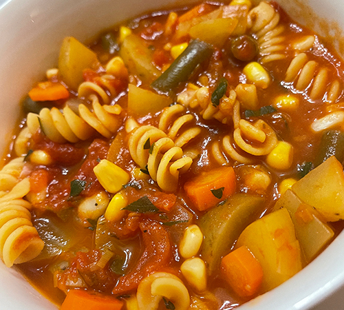

Garden Vegetable Soup

Ingredients
- 4 Tbsp olive oil
- 2-3 Leeks, chopped (white part only)
- 1 large onion
- 6 cloves garlic
- 2 cups carrots, sliced
- 2 cups diced Yukon Gold potatoes
- 2 qts chicken or veggie stock
- 1 can peeled tomatoes (28 oz)
- 1 can crushed tomatoes (28 oz)
- 1 bag frozen green beans
- 1 bag frozen corn
- 2 bay leaves
- ~1 tsp Poultry Seasoning (to taste)
- Additional herbs (to taste) (I like to throw an herb packet with lemon thyme in, can opt for dried parsley here instead of fresh later)
- salt (to taste)
- pepper (to taste)
- Fresh Parsley (to taste) (optional)
- Lemon Juice (to taste)
Instructions
Heat olive oil in large soup pot over medium-low heat.
Once hot, add leeks, onion, and a pinch of salt until they begin to soften (~7-8 min).
Add garlic, cook until fragrant.
Add carrots, potatoes, cook for 4-5 more min.
Add the stock and increase heat to bring to a simmer.
While heating, add both cans of tomatoes, crushing peeled tomatoes as you add them (want chunks).
Add frozen green beans, frozen corn, and spices.
Simmer for 25-30 minutes until potatoes are tender.
Add lemon and fresh parsley. Add salt/pepper to taste.